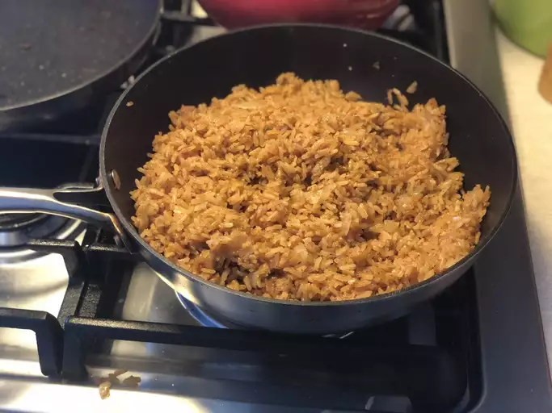

Mexican rice recipe

Description
If you're looking for a Mexican Rice recipe that will be "the star of the show," then this is the right recipe.
Prep time: 5min
Cook time: 25min
Total time: 30min
Ingridients
- 3 tablespoons vegetable oil
- 1 cup uncooked long-grain rice
- 1 teaspoon garlic salt
- ½ teaspoon ground cumin
- ¼ cup chopped onion
- 2 cups chicken broth
- ½ cup tomato sauce
Steps
- Heat oil in a large saucepan over medium heat. Add rice and season with garlic salt and cumin; cook, stirring constantly, until puffed and golden.
- Add onion; cook and stir until onion has softened. Stir in chicken broth and tomato sauce; bring to a boil. Reduce heat to low, cover, and simmer for 20 to 25 minutes. Fluff rice with a fork.